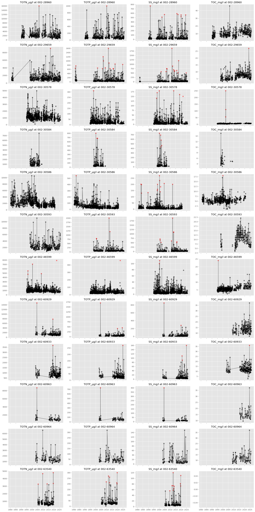
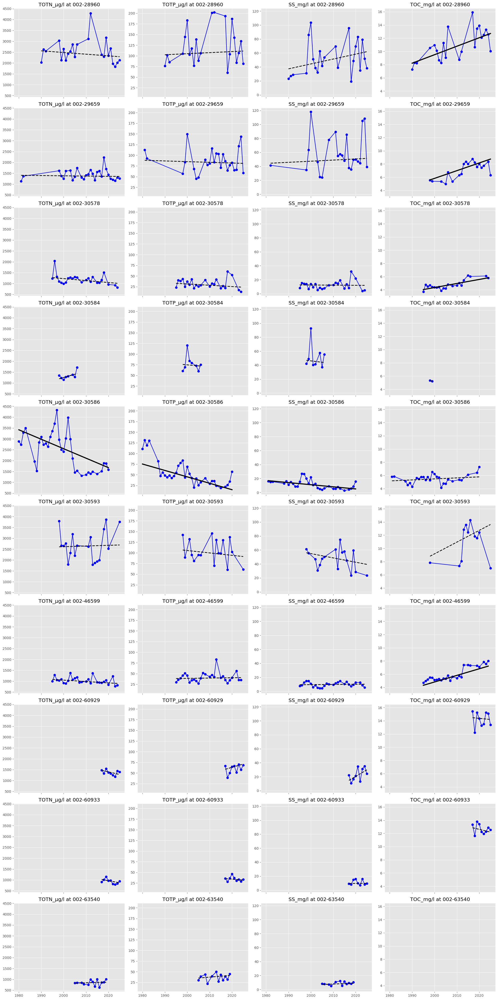

import warnings
import matplotlib.pyplot as plt
import nivapy3 as nivapy
import numpy as np
import pandas as pd
warnings.simplefilter("ignore")
plt.style.use("ggplot")TEOTIL3 for Lillestrøm kommune
Notebook 03: Annual mean concentrations
This notebook quality checks the raw water chemistry data and calculates mean annual concentrations at each site. The workflow is as follows:
- Detect and remove outliers (e.g. contaminated samples, lab errors). A conservative threshold is used, such that only the most extreme values are removed.
- To avoid bias due to limited sampling, annual means are only calculated if there are at least 12 samples per year.
- Mann-Kendall and Sen’s slope tests for trends are applied to each time series.
1. User options
# Threshold for marking outliers. Smaller values identify more outliers
out_thresh = 10
# Threshold based on number of samples per year
min_samps_per_year = 122. Sites of interest
# Read site data
xl_path = r"../data/lillestrom_monitoring_sites.xlsx"
stn_df = pd.read_excel(xl_path, sheet_name="chem_stns")
stn_df| catchment | station_id | station_name | regine | wb_id | wb_name | lon | lat | comment | |
|---|---|---|---|---|---|---|---|---|---|
| 0 | Sagelva | 002-46599 | Sagelva ved Skjetten bro (F3) | 002.CBA0 | 002-3899-R | Fjellhamarelva - Sagelva | 11.01695 | 59.95850 | Downstream |
| 1 | Sagelva | 002-63540 | Fjellhammarelva (F10) | 002.CBA0 | 002-3899-R | Fjellhamarelva - Sagelva | 10.99617 | 59.94419 | Slightly upstream |
| 2 | Nitelva | 002-30586 | Rud Nitelva (N8 ) | 002.CB0 | 002-3891-R | Nedre Nitelva | 11.05700 | 59.94553 | Downstream |
| 3 | Nitelva | 002-30578 | Kjellerholen Nitelva (N6) | 002.CC0 | 002-1638-R | Nitelva Slattum-Kjeller | 11.00850 | 59.97925 | Slightly upstream |
| 4 | Leira | 002-29659 | Leira ved Borgen bru (L5) | 002.CAA0 | 002-3384-R | Leira nedstrøms Krokfoss | 11.10032 | 59.95036 | Downstream |
| 5 | Leira | 002-30584 | Leira ved Leirsund (L8) | 002.CAA0 | 002-3384-R | Leira nedstrøms Krokfoss | 11.08849 | 59.99755 | Slightly upstream |
| 6 | Rømua | 002-28960 | Rømua ved Lørenfallet - RØM1 | 002.D2Z | 002-3659-R | Rømua | 11.22099 | 60.02163 | Downstream |
| 7 | Jeksla | 002-30593 | Jeksla ved Haugli, J14 | 002.CAA0 | 002-599-R | Jeksla | 11.10637 | 60.00199 | Downstream. Small part of regine |
| 8 | Åa | 002-60929 | Fossåa ved Sylta (ÅA1) | 002.D3Z | 002-3685-R | Fossåa | 11.30018 | 59.99209 | Downstream |
| 9 | Åa | 002-60963 | Sloråa ved Bruvollen (ÅA3) | 002.D3Z | 002-3687-R | Sloråa | 11.34807 | 59.98512 | Upstream. North branch |
| 10 | Åa | 002-60964 | Kauserudåa før samløp Sloråa (ÅA4) | 002.D3Z | 002-3692-R | Stensrudåa - Korsåa | 11.34823 | 59.98391 | Upstream. South branch |
| 11 | Gansåa | 002-60933 | Gansåa nedstrøms Dalen RA (BD) | 002.C5 | 002-3655-R | Gansåa | 11.22275 | 59.86139 | Downstream. Small part of regine |
3. Water chemistry data
# Raw chem from Vannmiljø
xl_path = r"../data/vannmiljo_data_stations.xlsx"
wc_df = pd.read_excel(xl_path, sheet_name="data_wide")
# Check all samples are from near the surface
if (wc_df['upper_depth'].max() > 2) or (wc_df['lower_depth'].max() > 2):
raise ValueError("Some samples are deeper than 2 m.")
# Average samples over depth
id_cols = ["station_code", "station_name", "sample_date"]
val_cols = [col for col in wc_df.columns if col.endswith("g/l")]
wc_df = wc_df[id_cols + val_cols].groupby(id_cols).mean().reset_index()
wc_df.head()| station_code | station_name | sample_date | NH4_µg/l | TOTN_µg/l | SRP_µg/l | TRP_µg/l | DIP_µg/l | TIP_µg/l | TDP_µg/l | TOTP_µg/l | SS_mg/l | TOC_mg/l | NO3_µg/l | |
|---|---|---|---|---|---|---|---|---|---|---|---|---|---|---|
| 0 | 002-28960 | Rømua ved Lørenfallet - RØM1 | 1990-04-30 | NaN | 1790.0 | NaN | NaN | 16.0 | NaN | NaN | 54.0 | 22.0 | 7.7 | NaN |
| 1 | 002-28960 | Rømua ved Lørenfallet - RØM1 | 1990-05-14 | NaN | 1080.0 | NaN | NaN | 8.0 | NaN | NaN | 34.0 | 6.8 | 5.9 | NaN |
| 2 | 002-28960 | Rømua ved Lørenfallet - RØM1 | 1990-05-28 | NaN | 1430.0 | NaN | NaN | 6.0 | NaN | NaN | 34.0 | 14.0 | 4.2 | NaN |
| 3 | 002-28960 | Rømua ved Lørenfallet - RØM1 | 1990-06-11 | NaN | 1100.0 | NaN | NaN | 1.0 | NaN | NaN | 40.0 | 10.0 | 4.5 | NaN |
| 4 | 002-28960 | Rømua ved Lørenfallet - RØM1 | 1990-06-25 | NaN | 2260.0 | NaN | NaN | 2.0 | NaN | NaN | 65.0 | 24.0 | 4.7 | NaN |
3.1. Plot raw data
With “outliers” marked in red.
# Plot raw concs
col_order = [
"TOTN_µg/l",
"NO3_µg/l",
"NH4_µg/l",
"TOTP_µg/l",
"SRP_µg/l",
"TRP_µg/l",
"DIP_µg/l",
"TIP_µg/l",
"TDP_µg/l",
"SS_mg/l",
"TOC_mg/l",
]
for stn_id, stn_wc_df in wc_df.groupby("station_code"):
fig, axes = plt.subplots(nrows=4, ncols=3, figsize=(15, 15), sharex=True)
axes = axes.flatten()
fig.delaxes(axes[-1])
stn_wc_df = stn_wc_df.sort_values("sample_date")
for idx, par in enumerate(col_order):
stn_wc_df["outlier"] = nivapy.stats.double_mad_from_median(
stn_wc_df[par], thresh=out_thresh
)
stn_wc_df["outlier"] = ["r" if i else "k" for i in stn_wc_df["outlier"]]
axes[idx].plot(stn_wc_df["sample_date"], stn_wc_df[par], "k-")
axes[idx].scatter(
stn_wc_df["sample_date"],
stn_wc_df[par],
c=stn_wc_df["outlier"].tolist(),
)
axes[idx].set_title(par)
fig.suptitle(stn_id)
plt.tight_layout()
png_path = f"../plots/concs/station_{stn_id}.png"
plt.savefig(png_path, dpi=200, bbox_inches="tight")
plt.close()Looking at the raw data for each site, we have:
- Consistent modelling of TOTN, TOTP, SS and TOC at most sites.
- Limited monitoring of NH4 and very little data for NO3. This makes it difficult to reliably estimate DIN from monitored data.
- Inconsistent monitoring of P fractions (a mixture of SRP, TRP, DIP, TIP and TDP, depending on the site, contractor and time period).
Based on this, I think it makes sense to use TOTN, TOTP, SS and TOC for trend tests and evaluation of TEOTIL. Estimates of monitored fluxes of fractions of N and P will not be reliable due to inconsistent monitoring.
3.2. Outliers
The plots below show the raw series for each site, with outliers marked in red.
# Plot outliers
col_order = [
"TOTN_µg/l",
"TOTP_µg/l",
"SS_mg/l",
"TOC_mg/l",
]
fig, axes = plt.subplots(nrows=len(stn_df), ncols=4, figsize=(20, 40), sharex=True)
for row_idx, (stn_id, stn_wc_df) in enumerate(wc_df.groupby("station_code")):
stn_wc_df = stn_wc_df.sort_values("sample_date")
for col_idx, par in enumerate(col_order):
stn_wc_df["outlier"] = nivapy.stats.double_mad_from_median(
stn_wc_df[par], thresh=out_thresh
)
stn_wc_df["outlier"] = ["r" if i else "k" for i in stn_wc_df["outlier"]]
axes[row_idx, col_idx].plot(
stn_wc_df["sample_date"], stn_wc_df[par], "k-", alpha=0.5
)
axes[row_idx, col_idx].scatter(
stn_wc_df["sample_date"],
stn_wc_df[par],
c=stn_wc_df["outlier"].tolist(),
alpha=0.5,
)
axes[row_idx, col_idx].set_title(f"{par} at {stn_id}")
plt.tight_layout()
png_path = r"../plots/concs/all_stations_main_pars.png"
plt.savefig(png_path, dpi=200, bbox_inches="tight")
# Remove outliers
val_cols = [
"TOTN_µg/l",
"TOTP_µg/l",
"SS_mg/l",
"TOC_mg/l",
]
df_list = []
for stn_id, stn_wc_df in wc_df.groupby("station_code"):
stn_wc_df = stn_wc_df.sort_values("sample_date")[id_cols + val_cols]
for par in val_cols:
stn_wc_df["outlier"] = nivapy.stats.double_mad_from_median(
stn_wc_df[par], thresh=out_thresh
)
stn_wc_df.loc[stn_wc_df["outlier"], par] = np.nan
del stn_wc_df["outlier"]
df_list.append(stn_wc_df)
clean_wc_df = pd.concat(df_list, axis="rows")
clean_wc_df.head()| station_code | station_name | sample_date | TOTN_µg/l | TOTP_µg/l | SS_mg/l | TOC_mg/l | |
|---|---|---|---|---|---|---|---|
| 0 | 002-28960 | Rømua ved Lørenfallet - RØM1 | 1990-04-30 | 1790.0 | 54.0 | 22.0 | 7.7 |
| 1 | 002-28960 | Rømua ved Lørenfallet - RØM1 | 1990-05-14 | 1080.0 | 34.0 | 6.8 | 5.9 |
| 2 | 002-28960 | Rømua ved Lørenfallet - RØM1 | 1990-05-28 | 1430.0 | 34.0 | 14.0 | 4.2 |
| 3 | 002-28960 | Rømua ved Lørenfallet - RØM1 | 1990-06-11 | 1100.0 | 40.0 | 10.0 | 4.5 |
| 4 | 002-28960 | Rømua ved Lørenfallet - RØM1 | 1990-06-25 | 2260.0 | 65.0 | 24.0 | 4.7 |
3.3. Filter based on sampling frequency and calculate annual means
# Get mask for sampling frequency
clean_wc_df["year"] = clean_wc_df["sample_date"].dt.year
group = clean_wc_df.groupby(["station_code", "station_name", "year"])
counts = group[val_cols].count()
valid_mask = counts >= min_samps_per_year
# Annual means where freq > min_freq
ann_df = group[val_cols].mean()
ann_df = (
ann_df.where(valid_mask)
.reset_index()
.sort_values(["station_code", "year"])
.dropna(subset=val_cols, how="all")
)
# Filter raw data based on sampling frequency
counts_long = counts.reset_index().melt(
id_vars=["station_code", "station_name", "year"],
value_vars=val_cols,
var_name="parameter",
value_name="n_samples",
)
valid_long = counts_long[counts_long["n_samples"] >= min_samps_per_year]
valid_long = valid_long.drop(columns="n_samples")
# Convert raw data to long format
raw_long = clean_wc_df.melt(
id_vars=id_cols + ["year"],
value_vars=val_cols,
var_name="parameter",
value_name="value",
)
# Keep only valid station-year-parameter data
filtered_long = raw_long.merge(
valid_long,
on=["station_code", "station_name", "year", "parameter"],
how="inner",
)
# Convert back to wide format
filt_wc_df = (
filtered_long.pivot_table(
index=id_cols + ["year"],
columns="parameter",
values="value",
)
.reset_index()
.sort_values(["station_code", "sample_date"])
.dropna(subset=val_cols, how="all")
)
print("Annual means:")
display(ann_df.head())
print("\nFiltered raw data:")
display(filt_wc_df.head())Annual means:| station_code | station_name | year | TOTN_µg/l | TOTP_µg/l | SS_mg/l | TOC_mg/l | |
|---|---|---|---|---|---|---|---|
| 0 | 002-28960 | Rømua ved Lørenfallet - RØM1 | 1990 | 2022.636364 | 76.363636 | 23.186364 | 7.272727 |
| 1 | 002-28960 | Rømua ved Lørenfallet - RØM1 | 1991 | 2625.000000 | 101.571429 | 27.055556 | 8.292857 |
| 2 | 002-28960 | Rømua ved Lørenfallet - RØM1 | 1992 | 2546.538462 | 85.461538 | 28.865385 | 8.213462 |
| 4 | 002-28960 | Rømua ved Lørenfallet - RØM1 | 1998 | 3034.444444 | 105.222222 | 30.961111 | 10.533333 |
| 5 | 002-28960 | Rømua ved Lørenfallet - RØM1 | 1999 | 2126.111111 | 144.277778 | 86.000000 | NaN |
Filtered raw data:| parameter | station_code | station_name | sample_date | year | SS_mg/l | TOC_mg/l | TOTN_µg/l | TOTP_µg/l |
|---|---|---|---|---|---|---|---|---|
| 0 | 002-28960 | Rømua ved Lørenfallet - RØM1 | 1990-04-30 | 1990 | 22.0 | 7.7 | 1790.0 | 54.0 |
| 1 | 002-28960 | Rømua ved Lørenfallet - RØM1 | 1990-05-14 | 1990 | 6.8 | 5.9 | 1080.0 | 34.0 |
| 2 | 002-28960 | Rømua ved Lørenfallet - RØM1 | 1990-05-28 | 1990 | 14.0 | 4.2 | 1430.0 | 34.0 |
| 3 | 002-28960 | Rømua ved Lørenfallet - RØM1 | 1990-06-11 | 1990 | 10.0 | 4.5 | 1100.0 | 40.0 |
| 4 | 002-28960 | Rømua ved Lørenfallet - RØM1 | 1990-06-25 | 1990 | 24.0 | 4.7 | 2260.0 | 65.0 |
3.4. Tests for trends
The code below plots annual mean concentrations for each site and also applies the Mann-Kendall and Sen’s slope tests for trends to the annual data.
- Solid black lines show significant trends (\(p \leq 0.05\)).
- Dashed lines show non-significant trends
col_order = [
"TOTN_µg/l",
"TOTP_µg/l",
"SS_mg/l",
"TOC_mg/l",
]
fig, axes = plt.subplots(
nrows=len(ann_df["station_code"].unique()),
ncols=4,
figsize=(20, 40),
sharex=True,
sharey="col",
)
res_dict = {
"station_id": [],
"par": [],
"mk_trend": [],
"mk_pval": [],
"sslp": [],
"sslp_ub": [],
"sslp_lb": [],
}
for row_idx, (stn_id, stn_wc_df) in enumerate(ann_df.groupby("station_code")):
stn_wc_df = stn_wc_df.sort_values("year")
for col_idx, par in enumerate(col_order):
stn_par_df = stn_wc_df[["year", par]].dropna(subset=par)
if len(stn_par_df) > 1:
# Test for trends
mk_df = nivapy.stats.mk_test(stn_par_df, par, alpha=0.05)
res_df, sen_df = nivapy.stats.sens_slope(
stn_par_df, par, index_col="year", alpha=0.05
)
# Extract results
trend = mk_df.loc["trend", "value"]
pval = mk_df.loc["p", "value"]
sslp = res_df.loc["sslp"]["value"]
icpt = res_df.loc["icpt"]["value"]
lb = res_df.loc["lb"]["value"]
ub = res_df.loc["ub"]["value"]
# Add to results
res_dict["station_id"].append(stn_id)
res_dict["par"].append(par)
res_dict["mk_trend"].append(trend)
res_dict["mk_pval"].append(pval)
res_dict["sslp"].append(sslp)
res_dict["sslp_ub"].append(ub)
res_dict["sslp_lb"].append(lb)
# Plot
axes[row_idx, col_idx].plot(stn_par_df["year"], stn_par_df[par], "bo-")
if trend != "no trend":
axes[row_idx, col_idx].plot(
sen_df.index.values,
sen_df.index.values * sslp + icpt,
"k-",
lw=3,
)
else:
axes[row_idx, col_idx].plot(
sen_df.index.values,
sen_df.index.values * sslp + icpt,
"k--",
lw=2,
)
axes[row_idx, col_idx].set_title(f"{par} at {stn_id}")
plt.tight_layout()
png_path = r"../plots/concs/all_stations_avg_concs.png"
plt.savefig(png_path, dpi=200, bbox_inches="tight")
# Merge results
stat_df = pd.DataFrame(res_dict)
stat_df = pd.merge(
stn_df[["catchment", "station_id", "station_name", "comment"]],
stat_df,
how="right",
on="station_id",
)
stat_dfWARNING: The data series has fewer than 10 non-null values. Significance estimates may be unreliable.
WARNING: The data series has fewer than 10 non-null values. Significance estimates may be unreliable.
WARNING: The data series has fewer than 10 non-null values. Significance estimates may be unreliable.
WARNING: The data series has fewer than 10 non-null values. Significance estimates may be unreliable.
WARNING: The data series has fewer than 10 non-null values. Significance estimates may be unreliable.
WARNING: The data series has fewer than 10 non-null values. Significance estimates may be unreliable.
WARNING: The data series has fewer than 10 non-null values. Significance estimates may be unreliable.
WARNING: The data series has fewer than 10 non-null values. Significance estimates may be unreliable.
WARNING: The data series has fewer than 10 non-null values. Significance estimates may be unreliable.
WARNING: The data series has fewer than 10 non-null values. Significance estimates may be unreliable.
WARNING: The data series has fewer than 10 non-null values. Significance estimates may be unreliable.
WARNING: The data series has fewer than 10 non-null values. Significance estimates may be unreliable.| catchment | station_id | station_name | comment | par | mk_trend | mk_pval | sslp | sslp_ub | sslp_lb | |
|---|---|---|---|---|---|---|---|---|---|---|
| 0 | Rømua | 002-28960 | Rømua ved Lørenfallet - RØM1 | Downstream | TOTN_µg/l | no trend | 0.459608 | -7.731481 | 12.274798 | -24.810924 |
| 1 | Rømua | 002-28960 | Rømua ved Lørenfallet - RØM1 | Downstream | TOTP_µg/l | no trend | 0.492290 | 0.247565 | 2.390093 | -1.082222 |
| 2 | Rømua | 002-28960 | Rømua ved Lørenfallet - RØM1 | Downstream | SS_mg/l | no trend | 0.125570 | 0.701904 | 1.621009 | -0.286806 |
| 3 | Rømua | 002-28960 | Rømua ved Lørenfallet - RØM1 | Downstream | TOC_mg/l | increasing | 0.003362 | 0.128487 | 0.199756 | 0.058632 |
| 4 | Leira | 002-29659 | Leira ved Borgen bru (L5) | Downstream | TOTN_µg/l | no trend | 0.890007 | -1.185023 | 6.420588 | -10.324074 |
| 5 | Leira | 002-29659 | Leira ved Borgen bru (L5) | Downstream | TOTP_µg/l | no trend | 0.791396 | -0.162524 | 1.288165 | -1.133501 |
| 6 | Leira | 002-29659 | Leira ved Borgen bru (L5) | Downstream | SS_mg/l | no trend | 0.751300 | 0.159979 | 1.304967 | -1.111905 |
| 7 | Leira | 002-29659 | Leira ved Borgen bru (L5) | Downstream | TOC_mg/l | increasing | 0.017359 | 0.116821 | 0.169591 | 0.030773 |
| 8 | Nitelva | 002-30578 | Kjellerholen Nitelva (N6) | Slightly upstream | TOTN_µg/l | no trend | 0.078219 | -9.034664 | 0.545833 | -16.794529 |
| 9 | Nitelva | 002-30578 | Kjellerholen Nitelva (N6) | Slightly upstream | TOTP_µg/l | no trend | 0.358743 | -0.304759 | 0.369796 | -0.847024 |
| 10 | Nitelva | 002-30578 | Kjellerholen Nitelva (N6) | Slightly upstream | SS_mg/l | no trend | 0.940682 | -0.021124 | 0.396569 | -0.250117 |
| 11 | Nitelva | 002-30578 | Kjellerholen Nitelva (N6) | Slightly upstream | TOC_mg/l | increasing | 0.003399 | 0.061387 | 0.089744 | 0.025441 |
| 12 | Leira | 002-30584 | Leira ved Leirsund (L8) | Slightly upstream | TOTN_µg/l | no trend | 0.173546 | 29.810458 | 86.982456 | -11.514161 |
| 13 | Leira | 002-30584 | Leira ved Leirsund (L8) | Slightly upstream | TOTP_µg/l | no trend | 0.901539 | -0.466436 | 7.385417 | -7.448400 |
| 14 | Leira | 002-30584 | Leira ved Leirsund (L8) | Slightly upstream | SS_mg/l | no trend | 0.901539 | -0.393981 | 5.728758 | -6.195046 |
| 15 | Leira | 002-30584 | Leira ved Leirsund (L8) | Slightly upstream | TOC_mg/l | no trend | 1.000000 | -0.124603 | -0.124603 | -0.124603 |
| 16 | Nitelva | 002-30586 | Rud Nitelva (N8 ) | Downstream | TOTN_µg/l | decreasing | 0.001851 | -43.548753 | -17.261905 | -63.102041 |
| 17 | Nitelva | 002-30586 | Rud Nitelva (N8 ) | Downstream | TOTP_µg/l | decreasing | 0.000003 | -1.503608 | -0.873885 | -2.385383 |
| 18 | Nitelva | 002-30586 | Rud Nitelva (N8 ) | Downstream | SS_mg/l | decreasing | 0.000489 | -0.302136 | -0.172474 | -0.428896 |
| 19 | Nitelva | 002-30586 | Rud Nitelva (N8 ) | Downstream | TOC_mg/l | no trend | 0.404351 | 0.015408 | 0.047960 | -0.016146 |
| 20 | Jeksla | 002-30593 | Jeksla ved Haugli, J14 | Downstream. Small part of regine | TOTN_µg/l | no trend | 0.944217 | 3.162393 | 63.750000 | -51.222222 |
| 21 | Jeksla | 002-30593 | Jeksla ved Haugli, J14 | Downstream. Small part of regine | TOTP_µg/l | no trend | 0.592301 | -0.562500 | 0.776557 | -2.703125 |
| 22 | Jeksla | 002-30593 | Jeksla ved Haugli, J14 | Downstream. Small part of regine | SS_mg/l | no trend | 0.266052 | -0.616909 | 0.740196 | -1.552120 |
| 23 | Jeksla | 002-30593 | Jeksla ved Haugli, J14 | Downstream. Small part of regine | TOC_mg/l | no trend | 0.876270 | 0.177778 | 0.563973 | -0.219792 |
| 24 | Sagelva | 002-46599 | Sagelva ved Skjetten bro (F3) | Downstream | TOTN_µg/l | no trend | 0.066576 | -6.340019 | 0.943342 | -11.896773 |
| 25 | Sagelva | 002-46599 | Sagelva ved Skjetten bro (F3) | Downstream | TOTP_µg/l | no trend | 0.818585 | 0.072907 | 0.476011 | -0.368558 |
| 26 | Sagelva | 002-46599 | Sagelva ved Skjetten bro (F3) | Downstream | SS_mg/l | no trend | 0.834863 | 0.026130 | 0.196743 | -0.153214 |
| 27 | Sagelva | 002-46599 | Sagelva ved Skjetten bro (F3) | Downstream | TOC_mg/l | increasing | 0.000003 | 0.100104 | 0.123260 | 0.057792 |
| 28 | Åa | 002-60929 | Fossåa ved Sylta (ÅA1) | Downstream | TOTN_µg/l | no trend | 0.348083 | -24.013095 | 18.614035 | -65.123615 |
| 29 | Åa | 002-60929 | Fossåa ved Sylta (ÅA1) | Downstream | TOTP_µg/l | no trend | 0.175308 | 1.529960 | 5.647619 | -1.214286 |
| 30 | Åa | 002-60929 | Fossåa ved Sylta (ÅA1) | Downstream | SS_mg/l | no trend | 0.175308 | 1.876665 | 4.105387 | -1.822333 |
| 31 | Åa | 002-60929 | Fossåa ved Sylta (ÅA1) | Downstream | TOC_mg/l | no trend | 0.602168 | -0.034577 | 0.361209 | -0.419891 |
| 32 | Gansåa | 002-60933 | Gansåa nedstrøms Dalen RA (BD) | Downstream. Small part of regine | TOTN_µg/l | no trend | 0.251452 | -19.234601 | 16.228261 | -58.055556 |
| 33 | Gansåa | 002-60933 | Gansåa nedstrøms Dalen RA (BD) | Downstream. Small part of regine | TOTP_µg/l | no trend | 0.754454 | -0.408774 | 1.060714 | -2.505333 |
| 34 | Gansåa | 002-60933 | Gansåa nedstrøms Dalen RA (BD) | Downstream. Small part of regine | SS_mg/l | no trend | 1.000000 | 0.019372 | 1.130435 | -1.315652 |
| 35 | Gansåa | 002-60933 | Gansåa nedstrøms Dalen RA (BD) | Downstream. Small part of regine | TOC_mg/l | no trend | 0.916965 | -0.082623 | 0.202484 | -0.358957 |
| 36 | Sagelva | 002-63540 | Fjellhammarelva (F10) | Slightly upstream | TOTN_µg/l | no trend | 0.427711 | 2.717094 | 18.746795 | -20.076923 |
| 37 | Sagelva | 002-63540 | Fjellhammarelva (F10) | Slightly upstream | TOTP_µg/l | no trend | 0.537134 | 0.439762 | 1.547472 | -1.160084 |
| 38 | Sagelva | 002-63540 | Fjellhammarelva (F10) | Slightly upstream | SS_mg/l | no trend | 0.450670 | 0.126585 | 0.551842 | -0.298475 |

# Save
xl_path = r"../data/cleaned_concs_stations.xlsx"
with pd.ExcelWriter(xl_path) as writer:
filt_wc_df.to_excel(writer, sheet_name="cleaned_chem", index=False)
ann_df.to_excel(writer, sheet_name="annual_avgs", index=False)
stat_df.to_excel(writer, sheet_name="conc_trends", index=False)